|
4-4-2
|
Côte d'Ivoire | 1 | - | 0 | Ecuador |
4-4-2
|
| HT 0-0 | ||||||
|
FIFA World CupMonday 15 June 2026
|
||||||
- Venue
- Philadelphia Stadium
- Attendance
- 68,274
- Referee
- François Letexier
Yellow card28'
S. Fofana
Yellow card38'
F. Kessie
Yellow card40'
G. Doué
- 2
Substitution56'
E. Wahi
A. Bonny
B. Touré
A. Diallo
- 2
Substitution77'
S. Fofana
I. Sangaré
N. Pépé
C. Inao Oulaï
Substitution89'
G. Doué
O. Kossounou
Goal90'
A. Diallo
Assist: W. Singo
Whistle45+5'
45+5'
Substitution56'
A. Minda
N. Angulo
- 2
Substitution62'
A. Franco
J. Porozo
J. Yeboah
Á. Preciado
Yellow card73'
J. Porozo
Substitution77'
E. Valencia
K. Rodríguez
Côte d'Ivoire | |
|---|---|
Goalkeeper | |
| 1 | Y. Fofana |
Defender | |
| 3 | G. Konan |
| 5 | W. Singo |
| 17 | G. Doué 40'89' |
| 20 | E. Agbadou |
Midfielder | |
| 6 | S. Fofana 28'77' |
| 8 | F. Kessie 38' |
| 11 | Y. Diomande |
| 24 | B. Touré 56' |
Forward | |
| 12 | E. Wahi 56' |
| 19 | N. Pépé 77' |
Substitutes | |
| 7 | O. Kossounou 89' |
| 9 | A. Bonny 56' |
| 15 | A. Diallo 56'90' |
| 18 | I. Sangaré 77' |
| 26 | C. Inao Oulaï 77' |
Ecuador | |
Goalkeeper | |
| 1 | H. Galíndez |
Defender | |
| 3 | P. Hincapié |
| 4 | J. Ordoñez |
| 6 | W. Pacho |
| 21 | A. Franco 62' |
Midfielder | |
| 9 | J. Yeboah 62' |
| 14 | A. Minda 56' |
| 15 | P. Vite |
| 23 | M. Caicedo |
Forward | |
| 13 | E. Valencia 77' |
| 19 | G. Plata |
Substitutes | |
| 11 | K. Rodríguez 77' |
| 17 | Á. Preciado 62' |
| 20 | N. Angulo 56' |
| 25 | J. Porozo 62'73' |


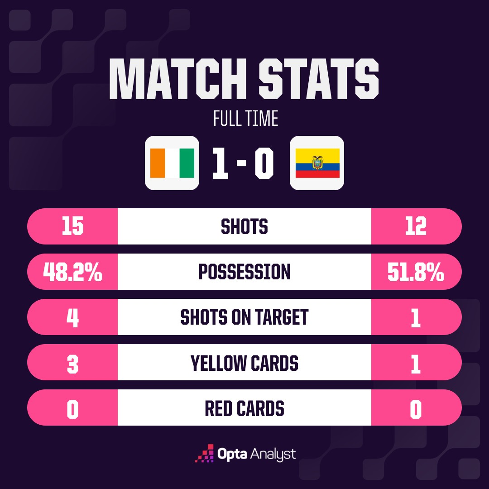
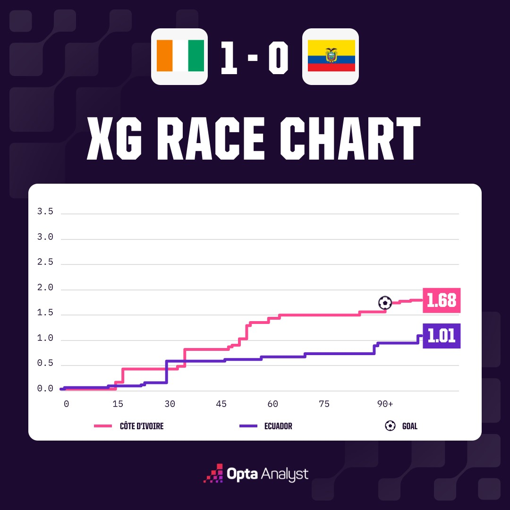
100'
Ecuador have failed to win in their last 3 games in the FIFA World Cup, their last joint longest winless streak was from 20th June 2006 to 15th June 2014.
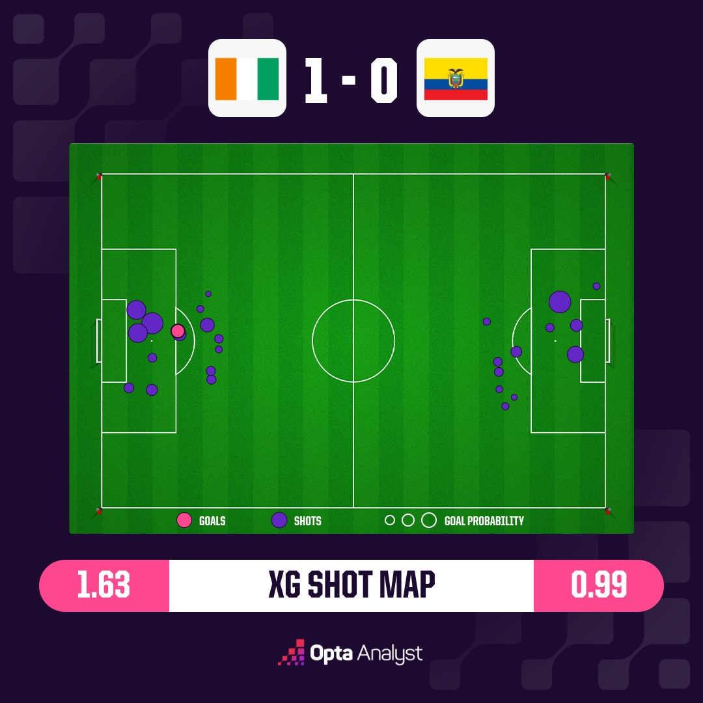
90+9'
IT’S ALL OVER! Côte d'Ivoire have taken the victory, winning 1-0 thanks to goal from Amad Diallo. Côte d'Ivoire can celebrate, but Ecuador will have to lick their wounds.
90+9'
Corner now for Ecuador, as they see a shot from Piero Hincapié deflected out of play for a set-piece. Côte d'Ivoire have some defending to do, here. Could this result in a big opportunity?
90+7'
That is a disappointing effort from Christ Inao Oulaï, who went for glory but got their attempt wrong, and the shot sailed off target. A frustrating moment for Côte d'Ivoire.
90+6'
Corner! The ball goes behind and now Ecuador will aim to deliver a good ball into the penalty area and test that Côte d'Ivoire defence, which has been frustrating them in recent minutes.
90+6'
It's all hands on deck for Côte d'Ivoire as they defend their lead, making a wave of critical blocks and clearances
90+5'
It is a corner now to Ecuador, with Côte d'Ivoire somewhat hanging on here as they look to hold out for a positive result. Can Ecuador make something of this set-piece opportunity?
90+4'
Amad Diallo goes for goal with a strike from distance, but Hernán Galíndez is able to watch it all the way and make the save. A bit of a tester, there.
90+3'
A foul from Nilson Angulo on Wilfried Singo sees Côte d'Ivoire win a free-kick, but it is not in a dangerous position, so Ecuador should be confident they can defend it easily enough.
90+2'
Moisés Caicedo goes in on Christ Inao Oulaï and concedes a foul. The free-kick is not in a particularly dangerous area from Ecuador’s viewpoint, though.
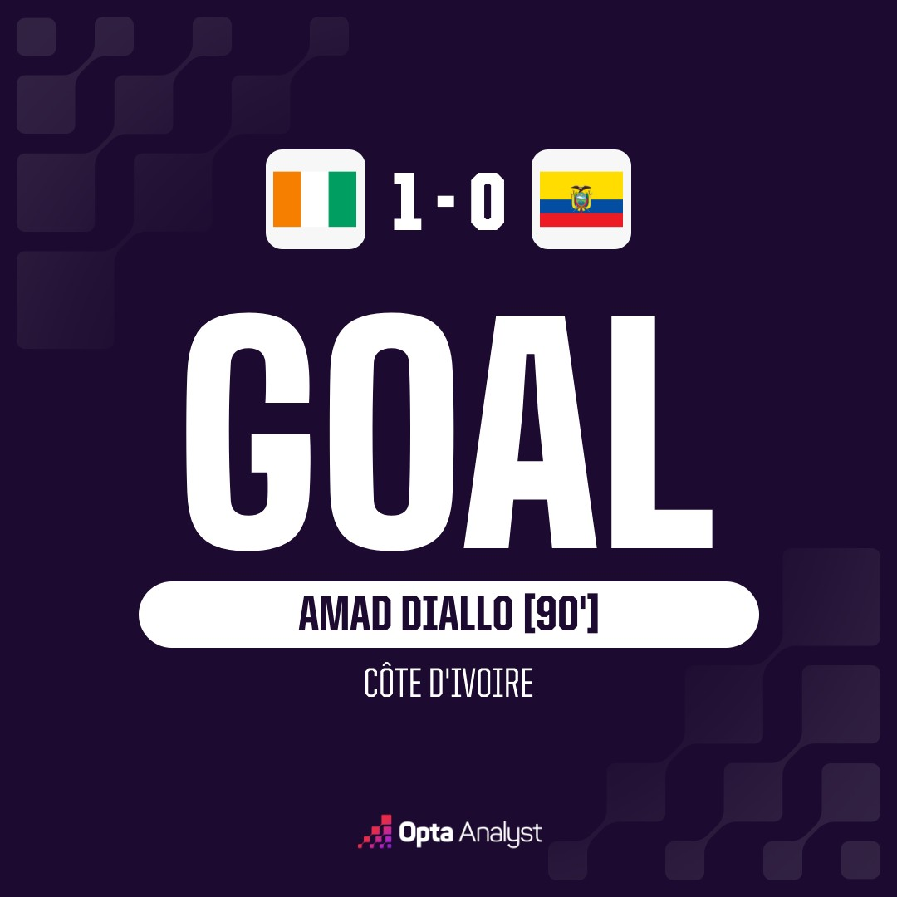
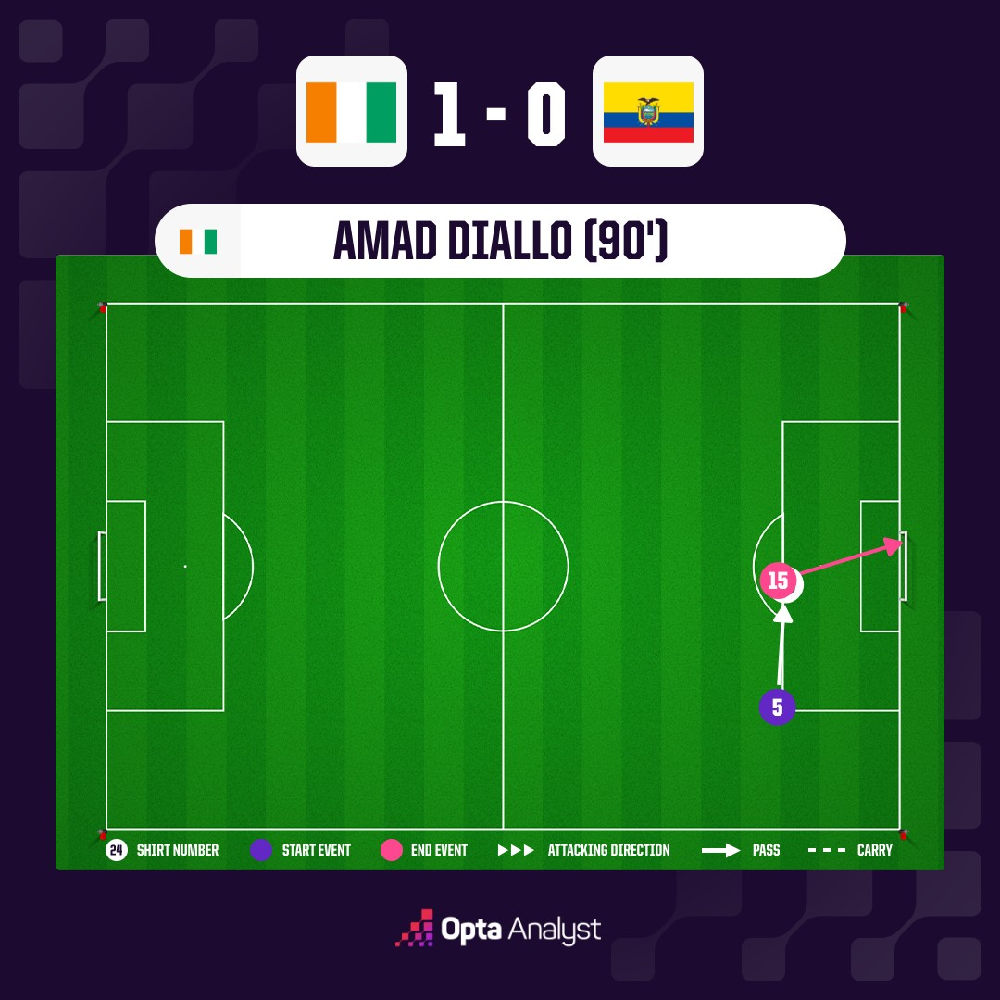
90+1'
GOAL! What a moment for Amad Diallo, who has found the back of the net from inside the 18-yard box to put Côte d'Ivoire ahead in the closing stages. Will that be enough for Côte d'Ivoire to claim the victory?
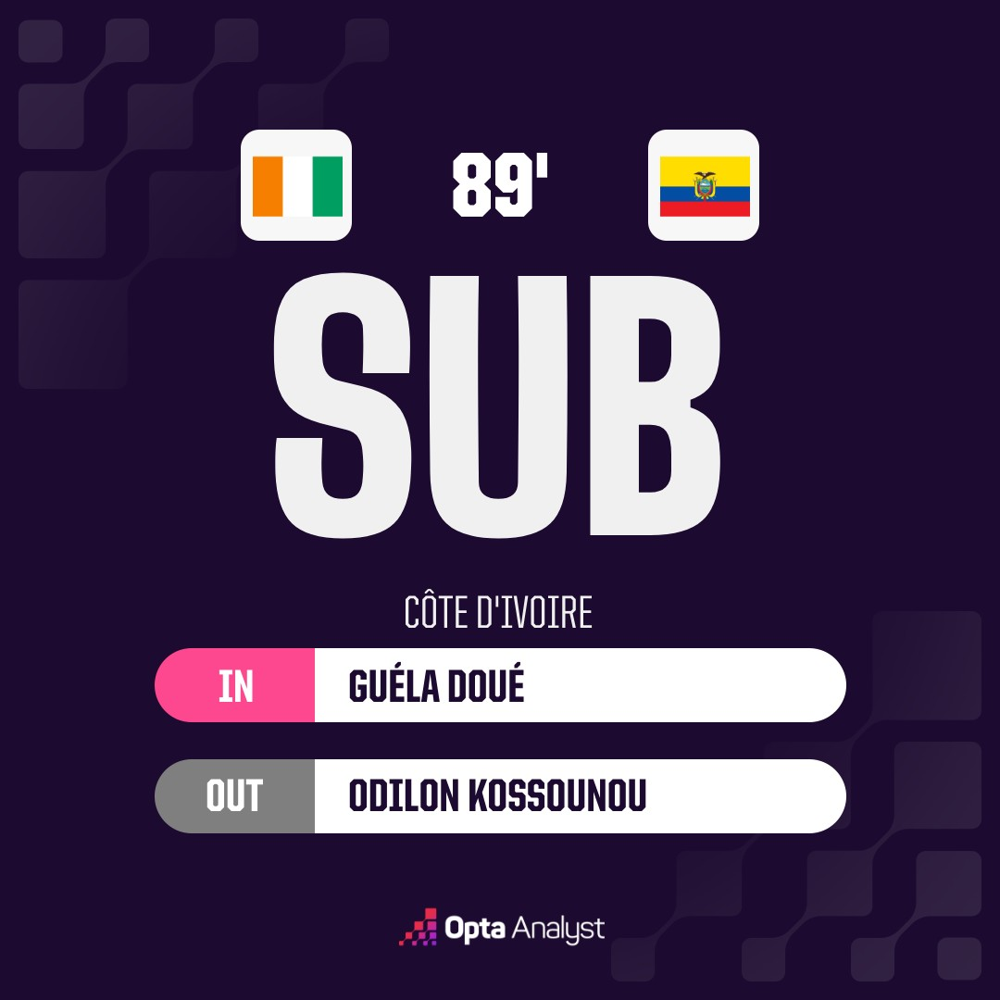
89'
The Côte d'Ivoire manager is looking to the substitutes’ bench, bringing on Odilon Kossounou in place of Guéla Doué. Will the change make a difference? Let’s find out!
88'
Shot blocked! Joel Ordoñez unleashes an attempt at goal, but the ball does not reach its target thanks to Wilfried Singo, who makes a solid block to stem the danger – for now.
87'
Joel Ordoñez's effort is deflected out for a corner. Can Ecuador make anything of this set-piece?
86'
Good play from Nilson Angulo, who draws a foul from Guéla Doué to hand Ecuador a free-kick in a dangerous position. Will they create something from this set-piece?
85'
Free-kick! A foul from Gonzalo Plata on Ibrahim Sangaré. It is well away from Ecuador’s goal, so it is unlikely to result in a chance for Côte d'Ivoire.
83'
MISS! The score remains 0-0, with Ecuador relieved after Côte d'Ivoire’s Ghislain Konan goes for goal but sends their attempt off target. Not one to write home about, that one.
81'
Moisés Caicedo goes in on Franck Kessie and concedes a foul. The free-kick is not in a particularly dangerous area from Ecuador’s viewpoint, though.
79'
Not much goalmouth action to speak of in this period of the game, with no attempts made from either side. This game could spark at any moment, however. It is Côte d'Ivoire who have had more of the ball, controlling 55 per cent possession in the last 10 minutes.
79'
This could be a chance for Côte d'Ivoire, after Moisés Caicedo fouls Christ Inao Oulaï, handing them a free-kick in a threatening area. A good set-piece from here could really test the Ecuador defense!
77'
Ecuador are making a tactical change. Enner Valencia is leaving the field and in their place comes Kevin Rodríguez – we will soon see if this switch has the desired impact.
77'
Substitution! Christ Inao Oulaï replaces Nicolas Pépé for Côte d'Ivoire as the manager shuffles the pack. Can Christ Inao Oulaï make an impression as this match continues?
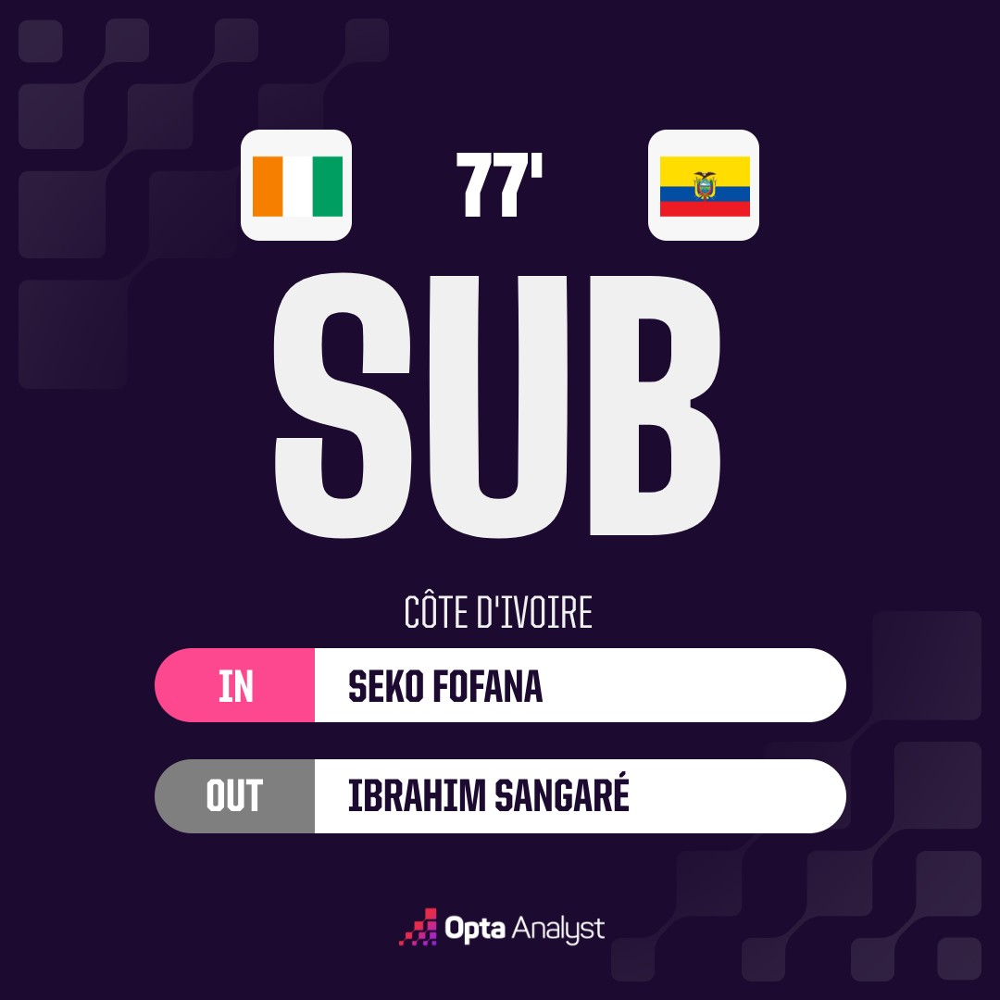
77'
Substitution! Ibrahim Sangaré replaces Seko Fofana for Côte d'Ivoire as the manager shuffles the pack. Can Ibrahim Sangaré make an impression as this match continues?
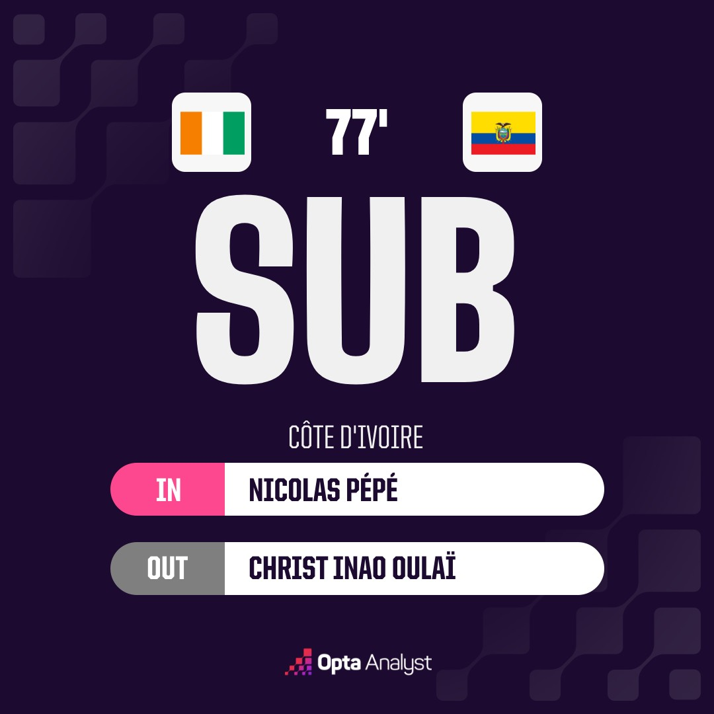
73'
That is a booking for Jackson Porozo, who has received their first yellow card. They are not happy with the decision, but it is done now, and they will have to be careful for the rest of this game.
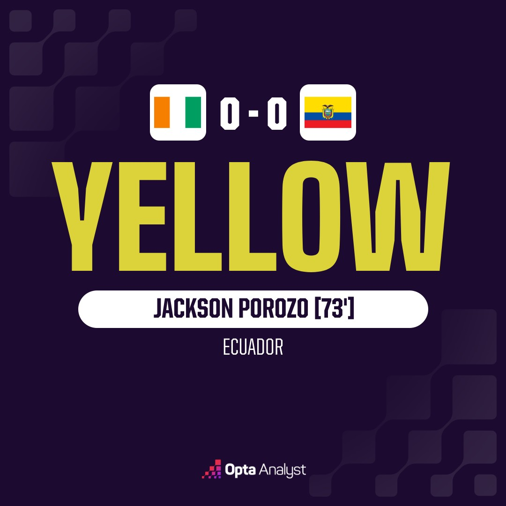
73'
Jackson Porozo goes in on Ange Bonny and concedes a foul. The free-kick is not in a particularly dangerous area from Ecuador’s viewpoint, though.
68'
Gonzalo Plata goes for goal with a strike from distance, but Yahia Fofana is able to watch it all the way and make the save. A bit of a tester, there.
66'
Just over an hour played, so let’s check on the shot count for each side. Côte d'Ivoire have had 11, getting 2 of those on target. Ecuador, meanwhile, have had no efforts on target, and 8 overall.
63'
A foul from Jackson Porozo on Ange Bonny sees Côte d'Ivoire win a free-kick, but it is not in a dangerous position, so Ecuador should be confident they can defend it easily enough.
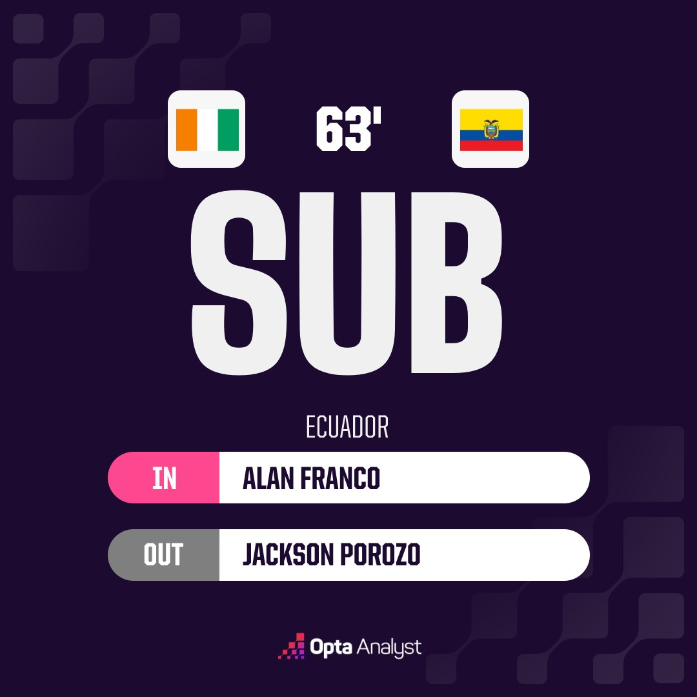
62'
The Ecuador manager is looking to the substitutes’ bench, bringing on Ángelo Preciado in place of John Yeboah. Will the change make a difference? Let’s find out!
62'
A substitution for Ecuador sees Alan Franco replaced by Jackson Porozo. There does not appear to be any obvious sign of an injury, so that is a tactical switch.
62'
Free-kick! A foul from Alan Franco on Yan Diomande. It is well away from Ecuador’s goal, so it is unlikely to result in a chance for Côte d'Ivoire.
61'
SAVE! A shot from outside the box by Côte d'Ivoire Seko Fofana was heading in, but Ecuador Hernán Galíndez keeps it out with a smart stop.
60'
Can Ecuador survive here? They will have some defending to do after the ball is turned behind for a corner kick. Will Côte d'Ivoire take this opportunity and grab the goal they have been pushing for?
58'
A chance goes begging as Yan Diomande gets off a shot that does not hit the target. They might have done better with that one, but instead it is a goal-kick to Ecuador.
57'
Free-kick! A foul from Alan Franco on Yan Diomande. It is well away from Ecuador’s goal, so it is unlikely to result in a chance for Côte d'Ivoire.
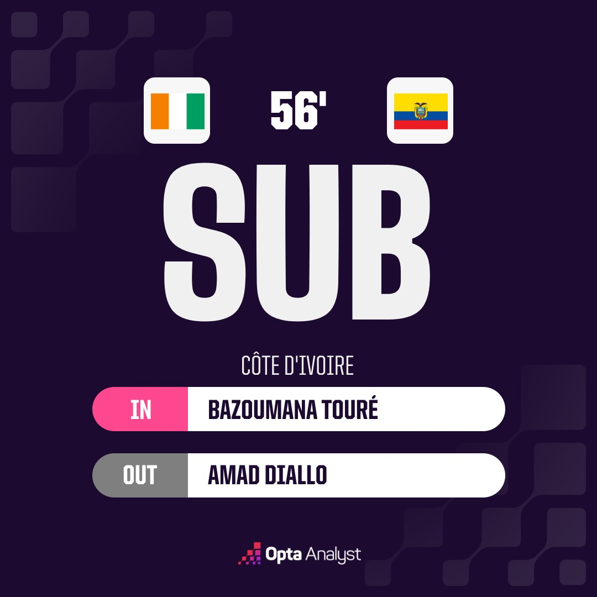
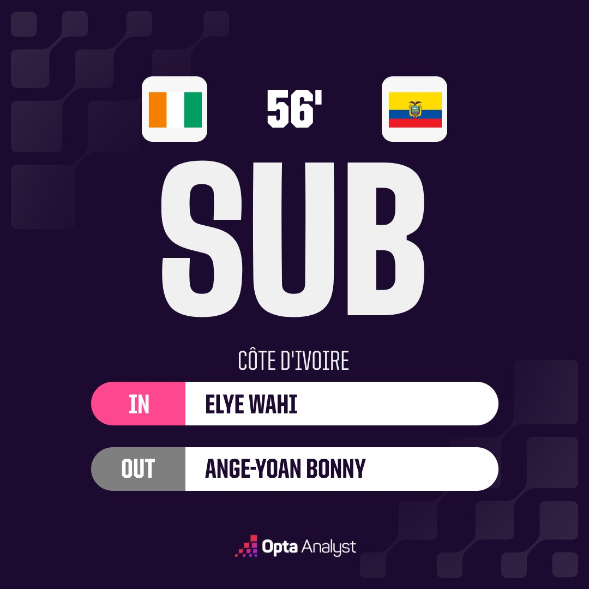
56'
Substitution! Amad Diallo replaces Bazoumana Touré for Côte d'Ivoire as the manager shuffles the pack. Can Amad Diallo make an impression as this match continues?
56'
Elye Wahi’s match is over as Côte d'Ivoire decide to make a substitution. Ange Bonny enters the field in what looks like a tactical change.
56'
A substitution for Ecuador sees Alan Minda replaced by Nilson Angulo. There does not appear to be any obvious sign of an injury, so that is a tactical switch.
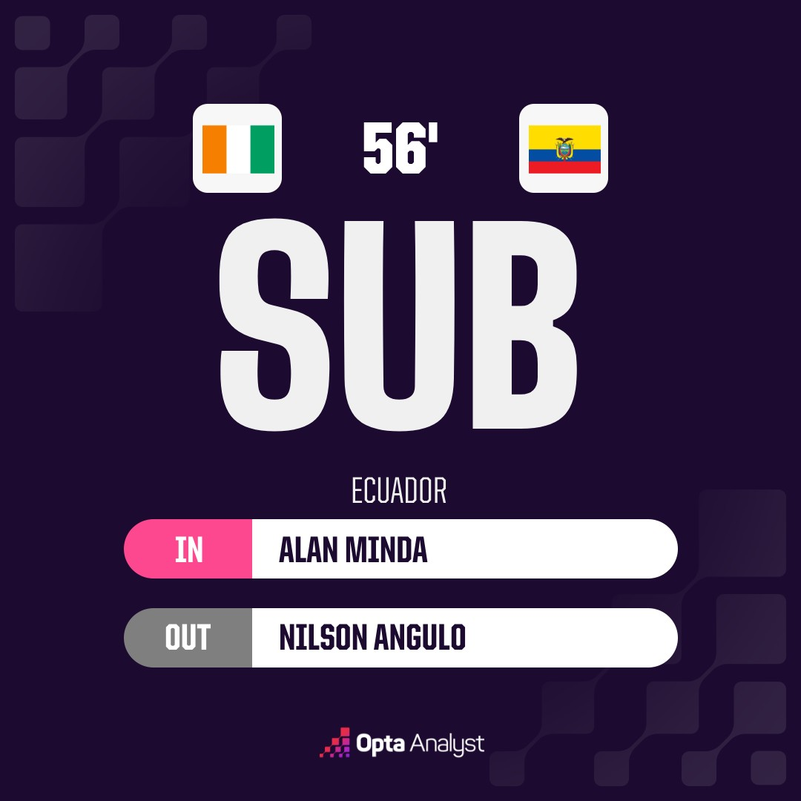
56'
That is a disappointing effort from Pedro Vite, who went for glory but got their attempt wrong, and the shot sailed off target. A frustrating moment for Ecuador.
53'
That is a disappointing effort from Seko Fofana, who went for glory but got their attempt wrong, and the shot sailed off target. A frustrating moment for Côte d'Ivoire.
52'
WHAT A MISS! Oh dear, oh dear, that is an awful attempt from Elye Wahi, as a huge chance for Côte d'Ivoire to score the goal they need goes begging. What a let off for Ecuador, though. They will have to defend better than that from here on out!
50'
MISS! A shot from Yan Diomande ends up being off target. They might have done a bit better with that one, but it remains Côte d'Ivoire 0-0 Ecuador.
48'
A rash challenge from Alan Franco, who sends Bazoumana Touré tumbling, giving Côte d'Ivoire a free-kick. It is not in a threatening position, but it gives them a chance to get back on the ball.
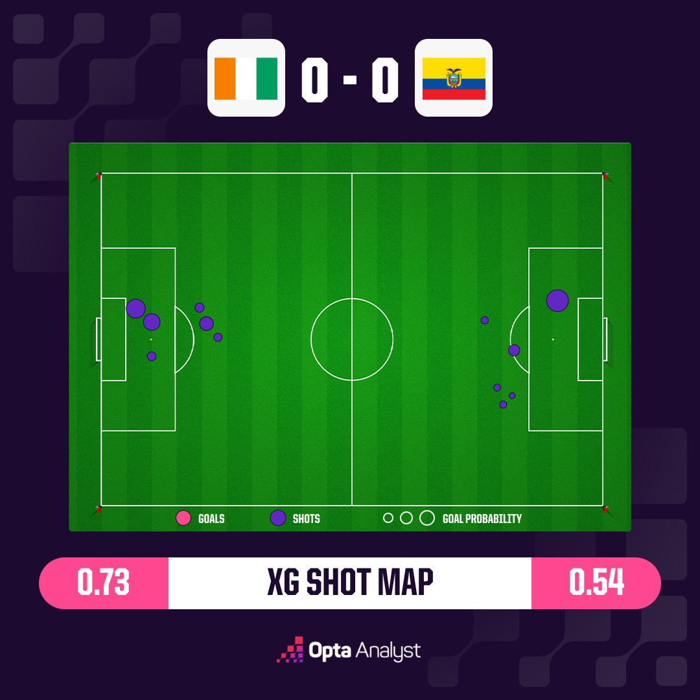
45+5'
Half-time! The referee blows the whistle and it is time for the interval. As we reach the break it is Côte d'Ivoire 0-0 Ecuador at Philadelphia Stadium.
45+4'
Franck Kessie goes in on Moisés Caicedo and concedes a foul. The free-kick is not in a particularly dangerous area from Côte d'Ivoire’s viewpoint, though.
45+2'
A chance goes begging as Wilfried Singo gets off a shot that does not hit the target. They might have done better with that one, but instead it is a goal-kick to Ecuador.
45+2'
Corner! Côte d'Ivoire are pushing for a goal and now they have an opportunity from this set-piece.
45+1'
Plenty of the ball in the last quarter-of-an-hour of this match for Ecuador, but Côte d'Ivoire have been able to hold them off with ease, with Ecuador having failed to even muster a shot at goal.
45+1'
A lull in this match, as the teams prob and probe, but without much success. It has been 10 minutes since there was an attempt from either side, though Ecuador are seeing more of the ball, with 78 per cent possession to Côte d'Ivoire’s 22 per cent during that time.
41'
Free-kick! A foul from Willian Pacho on Guéla Doué. It is well away from Ecuador’s goal, so it is unlikely to result in a chance for Côte d'Ivoire.
41'
Ecuador have not had a shot on target so far in this game.
40'
BOOKING! Yellow card for Guéla Doué, who is penalised for a foul. The referee waves away their remonstrations, and now they will have to be careful.
40'
Can Ecuador make this chance count? They have won a free-kick in a threatening position after a foul from Guéla Doué on Enner Valencia. Will Côte d'Ivoire's defence be tested here?
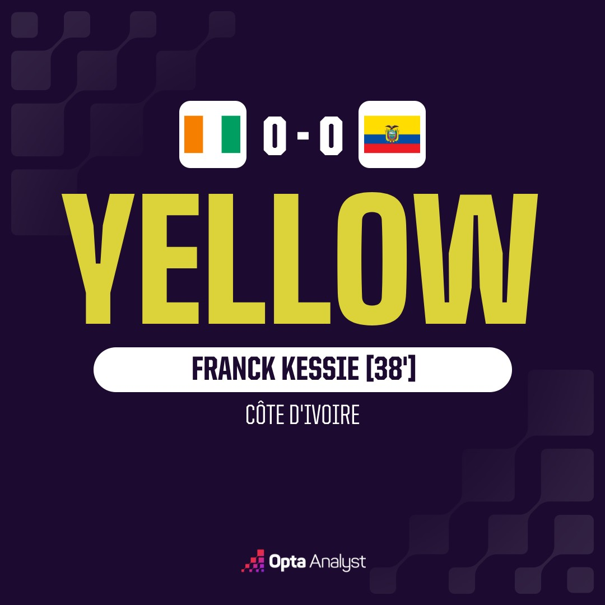
38'
That is a booking for Franck Kessie, who has received their first yellow card. They are not happy with the decision, but it is done now, and they will have to be careful for the rest of this game.
38'
A free-kick to Ecuador, as Franck Kessie goes in and fouls Piero Hincapié. However, Côte d'Ivoire will not mind giving one away in this area too much, with plenty of distance to their goal.
37'
Guéla Doué goes in on Alan Minda and concedes a foul. The free-kick is not in a particularly dangerous area from Côte d'Ivoire’s viewpoint, though.
37'
A free-kick to Côte d'Ivoire, as Enner Valencia goes in and fouls Guéla Doué. However, Ecuador will not mind giving one away in this area too much, with plenty of distance to their goal.
36'
Ecuador have had plenty of the ball in the last 15 minutes, with 65.52% possession compared to just 34.48 % for their opponents. However, there’s not been any goal to come from that possessional dominance just yet.
35'
BLOCK! An intervention from Alan Franco might have just prevented a goal, with the defending player getting in the way of an attempt from Nicolas Pépé. Solid defending there!
33'
A chance goes begging as Seko Fofana gets off a shot that does not hit the target. They might have done better with that one, but instead it is a goal-kick to Ecuador.
30'
MISS! A shot from John Yeboah ends up being off target. They might have done a bit better with that one, but it remains Ecuador 0-0 Côte d'Ivoire.
30'
MISSED! That is really poor from Alan Minda, who fails to convert from a golden opportunity, with the goal gaping. Will Ecuador pay for their profligacy, or can they put that miss behind them?
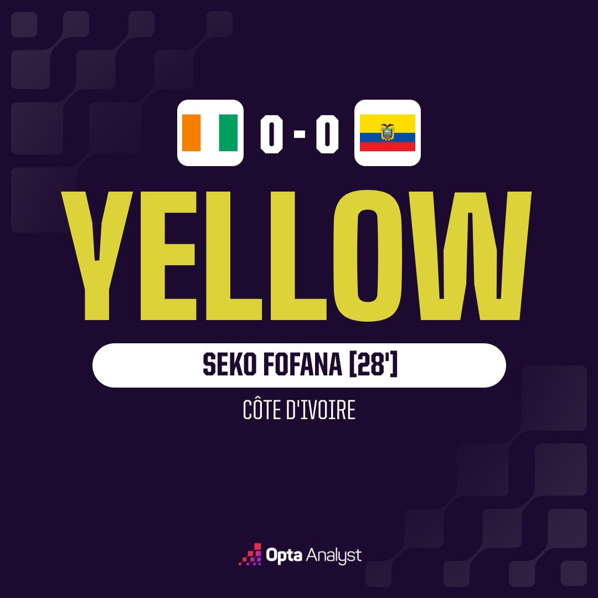
28'
The referee goes to their pocket and pulls out a yellow card, which is brandished in the direction of Seko Fofana. Will they be able to avoid a second booking?
28'
A foul from Seko Fofana on Moisés Caicedo sees Ecuador win a free-kick, but it is not in a dangerous position, so Côte d'Ivoire should be confident they can defend it easily enough.
24'
MISS! A shot from Alan Minda ends up being off target. They might have done a bit better with that one, but it remains Ecuador 0-0 Côte d'Ivoire.
22'
A free-kick to Ecuador, as Wilfried Singo goes in and fouls Enner Valencia. However, Côte d'Ivoire will not mind giving one away in this area too much, with plenty of distance to their goal.
20'
Côte d'Ivoire have had plenty of the ball in the last 15 minutes, with 65.59% possession compared to just 34.41% for their opponents. However, there’s not been any goal to come from that possessional dominance just yet.
19'
Corner! Côte d'Ivoire are pushing for a goal and now they have an opportunity from this set-piece.
18'
HUGE CHANCE GOES BEGGING! What a miss that is from Elye Wahi, who looked all set to score a goal that their team need, but instead fails to direct their attempt into the back of the net. That was a big, big opportunity for Côte d'Ivoire.
14'
MISS! The score remains 0-0, with Côte d'Ivoire relieved after Ecuador’s John Yeboah goes for goal but sends their attempt off target. Not one to write home about, that one.
8'
It’s been tight so far, and Ecuador are making sure it stays that way with strong defensive discipline and well-timed clearances.
8'
A rash challenge from Enner Valencia, who sends Franck Kessie tumbling, giving Côte d'Ivoire a free-kick. It is not in a threatening position, but it gives them a chance to get back on the ball.
7'
Côte d'Ivoire enjoying a strong spell early on - their passing rhythm is already clicking as they try to set the tone.
4'
A free-kick in a dangerous position now for Ecuador, after a foul from Franck Kessie on Enner Valencia. Can Ecuador make Côte d'Ivoire pay for that rashness from Franck Kessie?
2'
MISS! The score remains 0-0, with Côte d'Ivoire relieved after Ecuador’s Moisés Caicedo goes for goal but sends their attempt off target. Not one to write home about, that one.
2'
A free-kick in a dangerous position now for Ecuador, after a foul from Wilfried Singo on Enner Valencia. Can Ecuador make Côte d'Ivoire pay for that rashness from Wilfried Singo?
1'
We are under way as Ecuador kick off at Philadelphia Stadium. Let's hope an entertaining contest is in store.
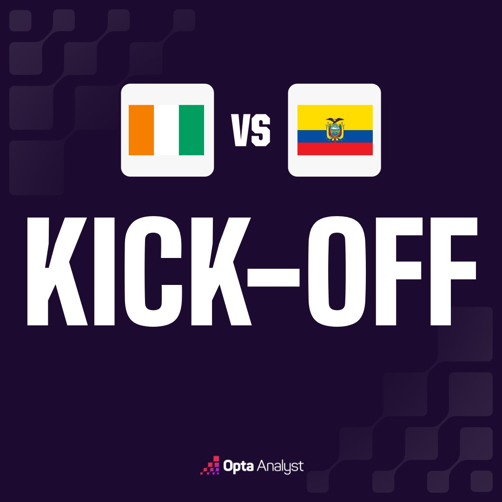
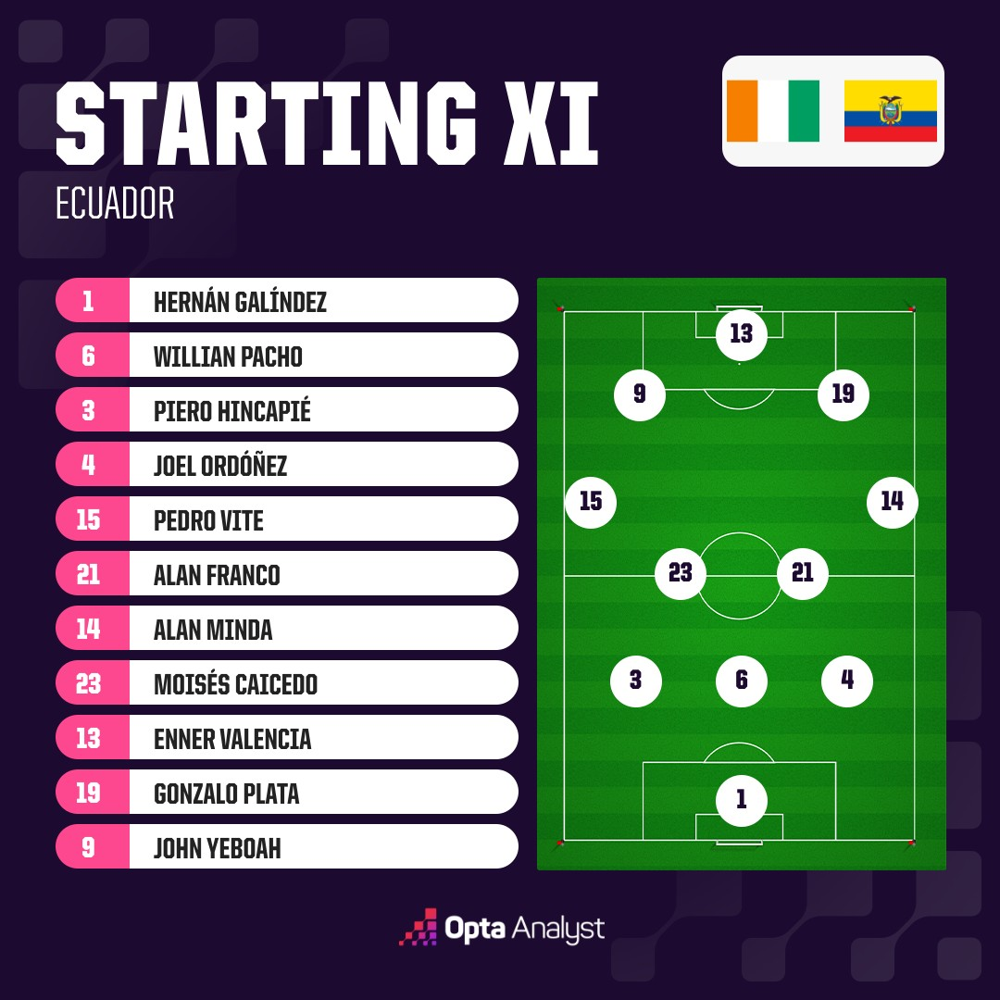
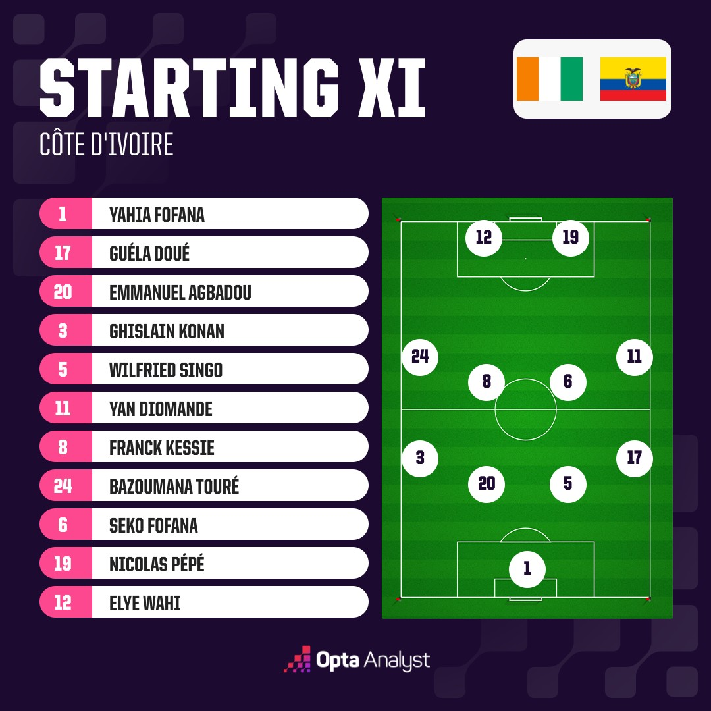
Ecuador have drawn their last 3 away matches in a row
Ecuador have kept a clean sheet in the last 5 matches
There have been fewer than 3 goals scored in total in each of Ecuador's last 9 away games
Ecuador have kept a clean sheet in the last 5 away matches
There have been fewer than 3 goals scored in total in each of Ecuador's last 5 games
Côte d'Ivoire and Ecuador face off in the FIFA World Cup group stage at Philadelphia Stadium on Sunday with both sides in the midst of successful streaks, as Côte d'Ivoire are looking for their fourth straight victory while Ecuador are unbeaten in their last 19.
It's the first match of the competition for both sides. Côte d'Ivoire earned a 2-1 victory over France in their last match, a June 4 friendly at Stade de la Beaujoire - Louis Fonteneau, their third victory in a row. Guéla Doué and Amad Diallo netted in the win. In five games this year, they have four wins and one loss.
Ecuador's last game saw them triumph 3-0 over Guatemala in a friendly on June 7 at ScottsMiracle-Gro Field. Jordy Caicedo, Nilson Angulo, and Pervis Estupiñán scored in the win.
Doué and Diallo have made a difference in front of goal for Côte d'Ivoire this year. The two players are the team's joint top scorers with two goals apiece. Ecuador have been led by seven players who have each scored once this year.
Côte d'Ivoire have scored in nine straight contests across all competitions. They haven't been shut out since a friendly with Saudi Arabia in November 2025.
In their last six matches in all competitions, Côte d'Ivoire have won five and lost one. The Ivorian side scored 15 and conceded six in that period, scoring first in three of the six contests. They had seven first-half goals, while their opponents netted five times in the first 45 minutes. The Ecuadorean side have won three and drawn three in their last six. The Ecuadorean side scored nine and conceded three over that stretch, netting first in four of the six. They had three goals in the first half, while their opponents netted only once before the break.
-
General
Possession 48.4% 48.43951.56151.6% Possession lost in defensive half 36 363535 Possession lost in middle third 48 484343 Duels 105 105102102 Duels success rate 55.2% 55.23843.13743.1% Aerial duels 28 282828 Aerial duels won 60.7% 60.71439.28639.3% Successful dribbles 14 1433 Fouls won 13 131010 Offsides 0 000 Corner awarded 3 366 -
Distribution
Passes 470 470492492 Long passes 40 403636 Long passes proportion (%) 8.5% 8.5117.3177.3% Passing accuracy 84.5% 84.46885.16385.2% Passes in opponents' half 240 240216216 Passing accuracy in opponents' half (%) 79.6% 79.58373.61173.6% Total passes in the final third 114 114110110 Passing accuracy in final third (%) 79.8% 79.82565.45565.5% Forward passes 283 283285285 Forward passes (%) 60.2% 60.21357.92757.9% Through balls 0 033 Final third entries 34 345656 Penalty area entries 13 132525 Total open play crosses 6 677 Crosses 8 81414 Crossing accuracy 25.0% 2528.57128.6% -
Attack
Goals 1 100 Shots 15 151212 Shots on target 4 411 Blocked shots 3 333 Headed shots 0 022 Shots outside the box 7 777 Shots inside the box 8 855 Shots accuracy excluding blocked shots 33.3% 33.33311.11111.1% Shooting accuracy 26.7% 26.6678.3338.3% Key Passes 12 1299 -
Defence
Tackles 14 142121 Tackles success rate 64.3% 64.28671.42971.4% Clearances 29 291818 Interceptions 11 111313 Recoveries 54 545151 Attacking third recovery 6 633 Defensive third recovery 28 282424 Midfield third recovery 20 202424 Recoveries in attacking half (%) 11.1% 11.1115.8825.9% -
Discipline
Fouls conceded 10 101313 Yellow cards 3 311 Red cards 0 000